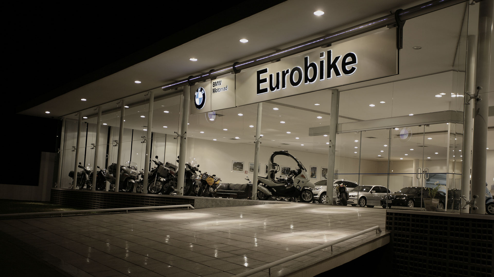

Abranche
Criação de identidade visual e website para startup de tecnologia focada em soluções de automação empresarial.
 Visitar o Site →Visão Geral do Projeto
A Abranche é uma startup de tecnologia especializada em soluções de automação para empresas de médio e grande porte. Em fase de expansão, a empresa precisava de uma identidade visual moderna e um website que comunicasse claramente seus serviços e valores, posicionando-a como uma referência inovadora no mercado de tecnologia empresarial.
Desafios e Objetivos
O principal desafio era criar uma identidade visual que transmitisse inovação e confiabilidade simultaneamente, equilibrando o aspecto tecnológico com a seriedade necessária para o mercado B2B. O website precisava comunicar conceitos técnicos complexos de forma acessível, além de destacar os casos de sucesso e diferenciais da empresa.

Os objetivos específicos incluíam aumentar a geração de leads qualificados, estabelecer a Abranche como autoridade em automação empresarial e criar uma plataforma escalável que pudesse crescer junto com a empresa.
Processo de Branding
O desenvolvimento da identidade visual começou com uma imersão profunda na cultura da empresa e análise do mercado de tecnologia empresarial. Após workshops com os stakeholders, definimos os valores centrais da marca: inovação, confiabilidade, eficiência e parceria.
A paleta de cores escolhida combina tons de azul, que transmitem confiança e profissionalismo, com acentos em verde-água, representando inovação e crescimento. A tipografia principal é geométrica e clean, reforçando a precisão e modernidade associadas à automação de processos.
Design e Desenvolvimento do Website
O website foi projetado com foco na experiência do usuário, especialmente para o perfil de decisores corporativos. A arquitetura de informação foi estruturada para guiar o visitante por uma jornada que começa com a apresentação dos problemas comuns enfrentados pelas empresas, seguida pelas soluções oferecidas pela Abranche e culminando em casos de sucesso e chamadas para ação.
Utilizamos uma abordagem de design minimalista com bastante espaço em branco, facilitando a leitura e a absorção de informações complexas. Elementos interativos como gráficos animados e infográficos foram implementados para ilustrar conceitos técnicos de forma visual e intuitiva.
Tecnologias Utilizadas
O frontend foi desenvolvido com HTML5, CSS3 (Sass) e JavaScript (ES6), garantindo uma experiência responsiva e performática em todos os dispositivos. Para o backend, implementamos um CMS personalizado baseado em WordPress, permitindo que a equipe da Abranche atualizasse facilmente o conteúdo do site, incluindo estudos de caso e artigos do blog.
Integramos o site com ferramentas de marketing automation e CRM, criando um fluxo eficiente para captura e qualificação de leads. Também implementamos análise avançada de dados para monitorar o comportamento dos usuários e otimizar continuamente a experiência.
Resultados e Impacto
Nos primeiros três meses após o lançamento do novo site e identidade visual, a Abranche registrou um aumento de 78% no número de leads qualificados e uma redução de 25% no custo de aquisição de cliente. O tempo médio de permanência no site aumentou em 45%, indicando maior engajamento com o conteúdo.
A nova identidade visual foi bem recebida tanto internamente quanto pelos clientes, fortalecendo o posicionamento da Abranche como uma empresa inovadora e confiável no mercado de automação empresarial. O projeto também estabeleceu uma base sólida para o crescimento contínuo da marca, com diretrizes claras para aplicação em diferentes canais e materiais.